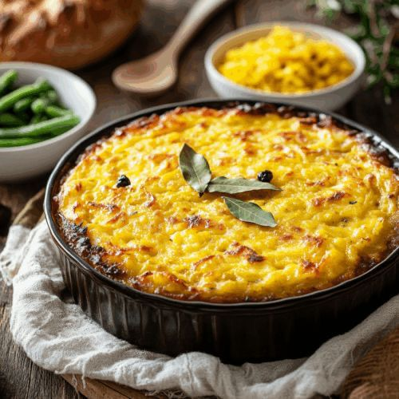

A Southern African Classic

The braai is South Africa's most powerful cultural institution — far more than a barbecue. Around a fire, South Africans of every background gather. The centrepiece is always boerewors — farmer's sausage made from beef, pork, and coriander seed, coiled onto the grid.
Alongside sit lamb chops, sosaties (marinated skewers with apricot jam and curry), and pap (stiff maize porridge). Heritage Day is unofficially National Braai Day — a fire-lit celebration of South African identity.